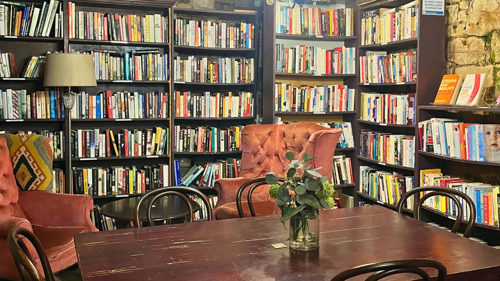
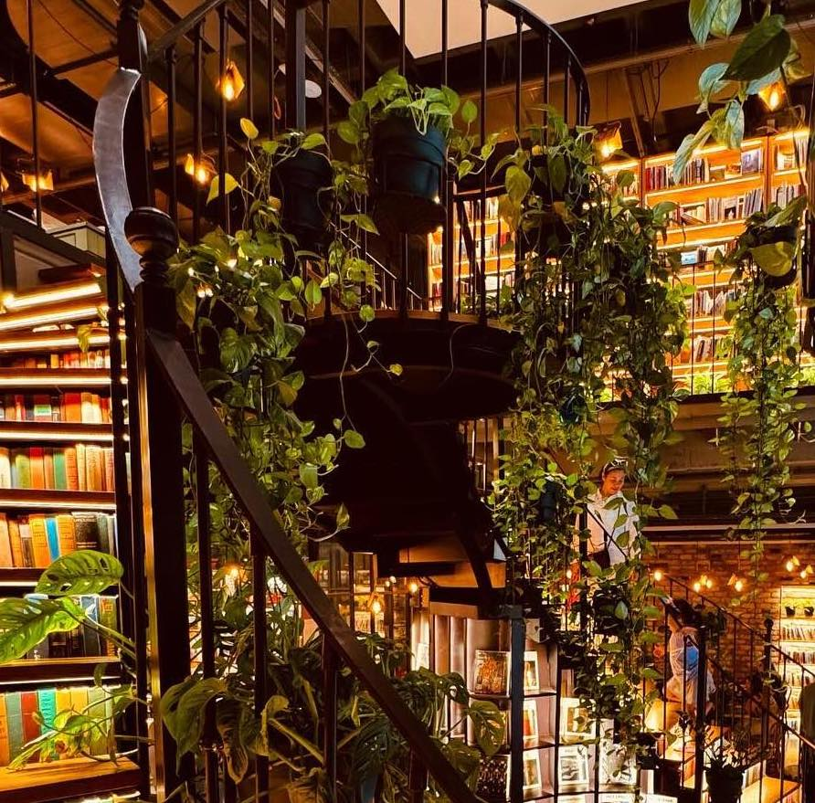
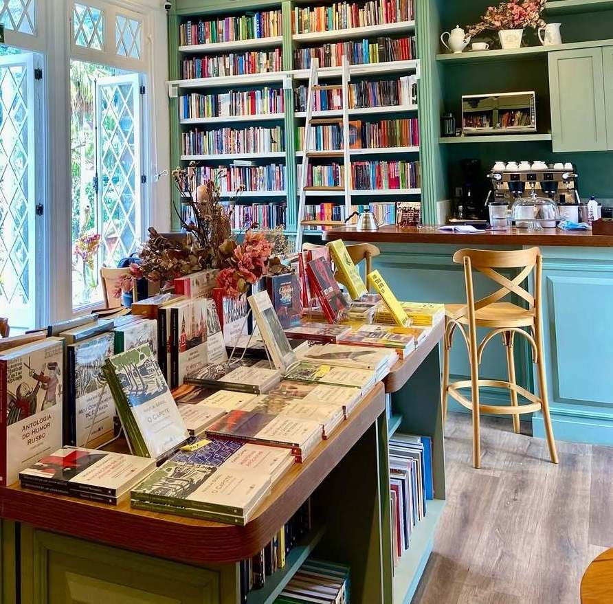
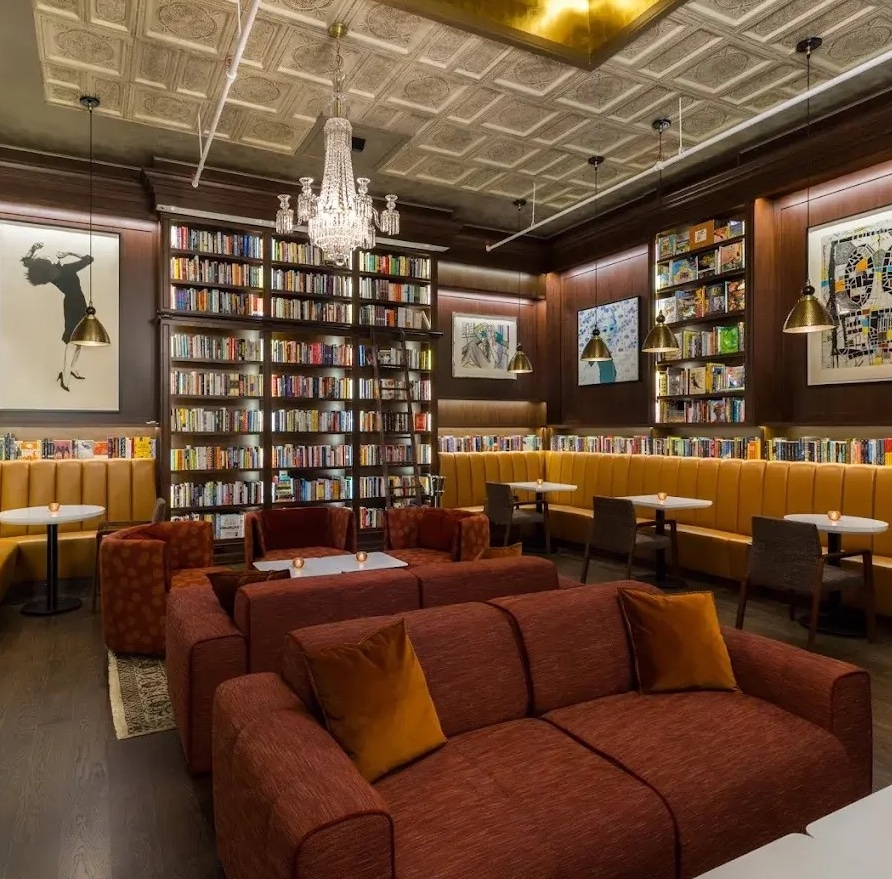

Why visit a book café?
Escape the everyday with books and brews
A book cafe merges the cozy ambiance of a coffee shop with the intellectual stimulation of a bookstore, creating a welcoming space for community and personal enrichment. Its unique atmosphere is defined by comforting smells of coffee and paper, warm lighting, and comfortable seating, offering an ideal escape. You can indulge in hobbies simultaneously, enjoying refreshments while browsing curated collections or simply relaxing with a good read.
They provide an inviting, calm environment popular with students, remote workers, and freelancers seeking productivity. Book café's can host a range of events such as author signings, poetry readings, and book club meetings, offering opportunities for cultural engagement and meeting like-minded individuals.
CAFÉS
My favourite book cafés

Minoa Pera
A welcoming three-storey building, housings a rich collection of over 60,000 books and a café–brasserie section serving freshly brewed coffee and delectable food.
Address:
Evliya Çelebi, Meşrutiyet Cd. No:99, 34430 Beyoğlu/İstanbul, Türkiye
Whats to like about it
Their collection spans from literature to art, photography to graphic design, gardening to gastronomy, children’s books to graphic novels. They also host an array of cultural and artistic events, including music performances and writing workshops.

Livraria Funambule
A cozy, cottage-like bookstore and café in Brazil, where soft white and green tones, along with an abundance of lush greenery, offer a calm and welcoming atmosphere.
Address:
Condomínio Petrópolis Green Offices - R. Prof. Stroeller, 428 - loja 15B - Quarteirão Brasileiro, Petrópolis - RJ, 25680-502, Brazil
What's to like about it
You can enjoy specialty coffee and pastries while browsing the shelves or relaxing on the outdoor terrace. This is must-visit spot for book lovers looking for a peaceful escape where literature and nature blend perfectly.

Bibliotheque
Founded in 2022, Bibliotheque is a bookstore, café, and wine bar in the heart of New York’s famed SoHo neighbourhood.
Address:
54 Mercer St, New York, NY 10013, United States
What's to like about it
Bibliotheque was born from a desire to combine great stories and exceptional food and drink in an elegant, visually stunning space. Whether you're looking to read a great book, meet up with friends, or enjoy a night out, Bibliotheque is the perfect blend of social and personable.